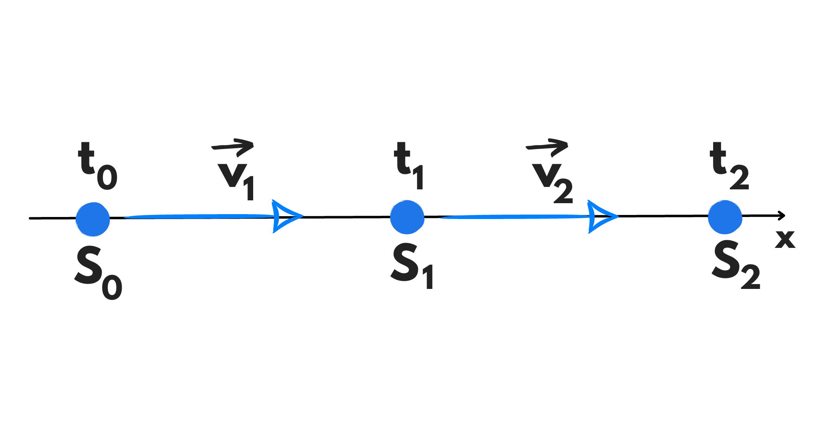

Il moto rettilineo uniforme è il caso particolare di moto nel piano più facile da studiare. Per questo inizieremo da qui.
Il suo nome ci dice tutto:
Il moto rettilineo uniforme descrive il moto dei corpi che si muovono lungo una traiettoria retta a velocità costante.
Per studiare qualsiasi moto dobbiamo prima conoscere la legge oraria, ovvero la relazione che lega lo spazio percorso con il tempo trascorso per percorrerlo. Nel moto rettilineo uniforme, per conoscere la legge oraria ci basta avere \(3\) dati.
Ci serve la velocità \(v\), che in un moto rettilineo uniforme è costante, lo spazio iniziale \(S_0\), che dipende dalla posizione dell’osservatore (solitamente per facilitare si mette \(0\)) e \(t_0\) (che, se possibile, si mette anch’esso uguale a \(0\)).
\[S_{t}=S_0+v \cdot (t-t_0)\]
Però cosa è effettivamente la velocità? Prima di parlare di essa dobbiamo definire una nuova grandezza fisica: la velocità media..
La velocità media è uguale allo spazio percorso diviso il tempo impiegato, ovvero:
\[{v}_{m}=\frac{{S}_{1}-{S}_{0}}{{t}_{1}-{t}_{0}}\]
Siccome nel nostro moto la velocità è costante, possiamo chiamare la velocità media \(v_m\) come una più generale velocità \(v\). È proprio da questo formula che, isolando \(S_1\), possiamo ricavarci la legge oraria vista prima.
Il “punto \(0\)” si chiama origine e, come detto prima, solitamente si fa corrispondere l’origine ad \(S_0\). Se poi siamo liberi anche di decidere da dove fare iniziare il tempo, conviene imporre anche \(t_0\) pari a \(0\) secondi. In tal caso la nostra formula per la velocità si semplificherà in:
\(v=\frac{{s}_{1}-0}{{t}_{1}-0}=\frac{{s}_{1}}{{t}_{1}}\)
Quindi possiamo chiamare \(s_1\) e \(t_1\) genericamente \(s\) e \(t\):
\[v=\frac{s}{t}\]
In generale però non sempre possiamo decidere noi che valore dare a \(s_0\) e a \(t_0\), quindi è importante che vi ricordiate la formula generale. Se poi sapete anche la formula più semplice per i casi particolari, meglio.
Siccome \(S_1-S_0\) e \(t_1-t_0\) sono delle differenze, alcune volte si scrivono rispettivamente \(\Delta S\) e \(\Delta t\). Infatti, come forse già saprete, la lettera greca \(\Delta\)(Delta) sta, in questi casi, per “differenza di”. Quindi al posto di scrivere “differenza dello spazio (\(S_1-S_0\))” scriviamo \(\Delta S\).
Per questo su molti libri troverete scritta la formula per la velocità come:
\[v=\frac{\Delta S}{\Delta t}\]
Immaginiamoci un corpo che si muove per un certo tratto (da \(S_0\) a \(S_1\)) in un moto rettilineo uniforme a velocità \(v_1\) e poi per un altro tratto (da \(S_1\) a \(S_2\)) sempre in un moto rettilineo uniforme ma a velocità \(v_2\). Cosa possiamo dire sul moto totale?
Di questo tipo di moto esistono due casi particolari che vengono spesso trattati con attenzione a scuola:
Se i due tratti sono uguali, possiamo ricavarci facilmente la velocità media di tutto il moto sapendo le due velocità dei singoli tratti.
Al punto \(S_0\), il tempo percorso sarà \(t_0\), ad \(S_1\) sarà \(t_1\) e ad \(S_2\) sarà \(t_2\).
Dalle legge orarie dei due moti abbiamo:
\(S_1=S_0+v_1(t_1-t_0)\)
e
\(S_2=S_1+v_2(t_2-t_1)\)
Possiamo isolare le differenze dei tempi ed ottenere:
\((t_1-t_0)=\frac{S_1-S_0}{v_1}={s \over v_1}\)
\((t_2-t_1)=\frac{S_2-S_1}{v_2}={s \over v_2}\)
Siamo pronti ora a trovare la velocità media \(v_m\) conoscendo soltanto \(v_1\) e \(v_2\):
Sappiamo che:
\(v_m=\frac{\Delta S}{\Delta t}\)
Quindi siccome il nostro tratto inizia a \(S_0\) e finisce a \(S_1\):
\(v_m=\frac{S_2-S_0}{t_2-t_0}\)
Possiamo aggiungere e sottrarre \(S_1\) al numeratore, mentre aggiungiamo e sottraiamo \(t_1\) al denominatore:
\(v_m=\frac{S_2-S_0+S_1-S_1}{t_2-t_0+t_1-t_1}\)
\(Riordiniamo:\)
\(v_m=\frac{S_2-S_1+S_1-S_0}{t_2-t_1+t_1-t_0}\)
\(v_m=\frac{(S_2-S_1)+(S_1-S_0)}{(t_2-t_1)+(t_1-t_0)}\)
Sostituiamo:
\(v_m=\frac{s+s}{{s \over v_1}+{s \over v_2}}\)
\(v_m={2s \over {{s\over v_1}+{s \over v_2}}}\)
\(v_m={2\over {{1\over v_1}+{1\over v_2}}}\)
Ovvero \(v_m\) è uguale alla media armonica tra \(v_1\) e \(v_2\).
Le equazioni sono le stesse di prima, ma questa volta sono \(t_1-t_0\) e \(t_2-t_1\) ad essere uguali. Chiamiamo questa quantità \(t\).
Questa volta però dalle leggi orarie ricaviamo:
\(S_1=S_0+v_1t \rightarrow \) \( S_1-S_0=v_1t\)
\(S_2=S_1+v_2t \rightarrow \) \(S_2-S_1=v_2t\)
Ricordiamo che:
\(v_m=\frac{\Delta S}{\Delta t}=\frac{S_2-S_0}{t_2-t_0}\)
Anche questa volta aggiungiamo e sottraiamo al numeratore e \(S_1\) al \(t_1\) denominatore:
\(v_m=\frac{S_2-S_0+S_1-S_1}{t_2-t_0+t_1-t_1}\)
Riordiniamo e sostituiamo:
\(v_m=\frac{(S_2-S_1)+(S_1-S_0)}{(t_2-t_1)+(t_1-t_0)}\)
\(v_m=\frac{v_2t+v_1t}{t+t}\)
\(v_m=\frac{(v_1+v_2)t}{2t}\)
\(v_m={v_1+v_2 \over 2}\)
Ovvero \(v_m\) è uguale alla media aritmetica tra \(v_1\) e \(v_2\).